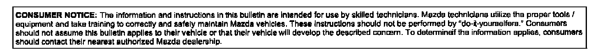

Accessories - Keyless Entry Service Information
Bulletin No: 09-018/01Last Issued: 12/21/2001
Subject:
SERVICE INFORMATION FOR KEYLESS ENTRY SYSTEM
APPLICABLE MODEL(S)/VINs
1999-2002 Millenia
1999-2002 Protege
1999-2002 626
1999-2002 Miata
2000-2002 MPV
DESCRIPTION
It is not necessary to replace BOTH the keyless entry unit and the transmitter when repairing the keyless entry systems.
If there are any concerns with the keyless entry system, then first determine which of the parts is inoperative, and replace only the failed part.
REPAIR PROCEDURE
For troubleshooting the keyless entry system, refer to the appropriate Workshop Manual (section 09) for Symptom Troubleshooting the Keyless Entry System.

DISCLAIMER